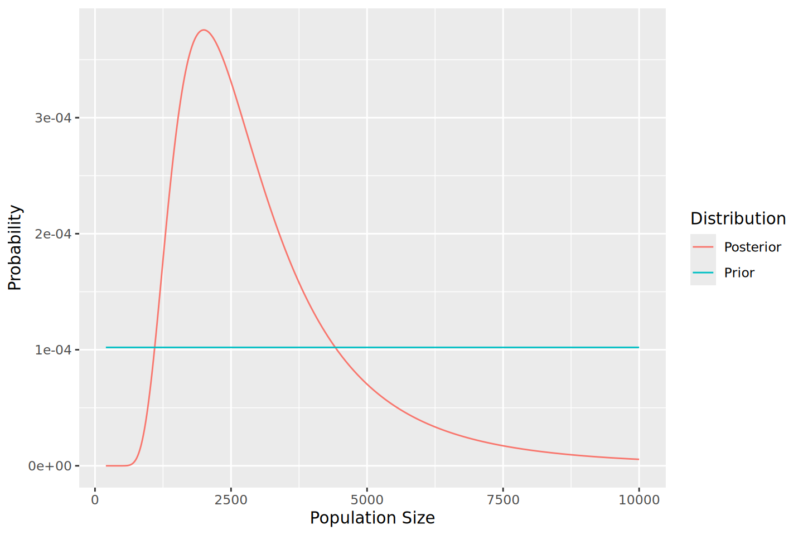

makeUniformPrior <- function(max_N, first=1, second=1, recaught=0){
# impossible to have a population size smaller than the
# total number captured in either run
N <- (first + second - recaught):max_N
prob <- 1/length(N)
return(data.frame(N, prob))
}Recapture: Bayesian Confidence
Biol B215
Bayesian Analysis
To calculate Bayesian Credible Intervals, we will use, as you might have guessed, Bayes’ Theorem. Stated for this context, it is:
\[\Pr(N=x \mid R) = \frac{\Pr(R \mid N=x)\Pr(N=x)}{\Pr(R)}\]
or in words:
The probability that the total population size (\(N\)) is \(x\) given that we observed \(R\) marked (recaptured) individuals in our second trapping is equal to the probability that we would capture \(R\) marked individuals given that the population size is \(x\) times the prior probability that the population size is \(x\), divided by the probability that we would capture \(R\) marked individuals, across all possible population sizes. (All given that we captured \(M\) individuals in the first trapping and \(C\) in the second)
So what parts of this do know from our data? Well, we know \(R\), and we can calculate \(\Pr(R \mid N=x)\) (the likelihood of \(R\) given \(N=x\)) using the hypergeometric distribution as shown previously.
Leaving aside the prior, \(\Pr(N=x)\), for a moment, we will go on to \(\Pr(R)\). By the law of total probability, we can calculate that:
\[\Pr(R) = \sum_x{\Pr(R \mid N=x)\Pr(N=x)}\]
which is to say that the total probability of the observed \(R\) is equal to the sums of the probabilities of observing \(R\) for each possible value of \(N\) times the probability of that value of \(N\).
So that leaves us again with \(\Pr(N=x)\), which is the prior probability that \(N\) equals some value \(x\). Here there are a number of options, as you might have any number of ideas about what the population size is most likely to be. For now, we’ll just assume that the population size is less than some large number, say 10,000 individuals. We can also be pretty safe in assuming that it is larger than the sum of \(M\) and \((C-R)\), since we captured that many individuals. Other than that, we will assume that all population sizes in the range we have defined as “possible” are exactly the same. This is what is known as a uniform or flat prior. To be specific, this means that we will set the prior probability for each value of \(x\) as \(1/(10,000 - (M + C - R))\)
Calculating posterior probability
With a prior probability set and the likelihood calculations done, we should be able to construct a function to calculate the posterior probability distribution of population size given the number of marked individuals that we caught on our second trapping trip. First we’ll write a function to make the data frame of the population sizes we will look at (with a minimum as described above), and their prior probabilities, which will be the the same for all possible population sizes: a uniform prior.
Since we can calculate the all of the likelihoods we need as described above, we can go right on to calculating the posterior probabilities of each population size given the number of marked individuals, the number of individuals trapped each time, and the prior probabilities (with the prior given as a a data frame with columns named N and prob, as constructed above).
calcPosterior <- function(marked, first, second, prior){
likelihoods <- dhyper(x = marked,
m = first,
n = prior$N - first,
k = second)
numerators <- likelihoods * prior$prob
denominator <- sum(numerators)
posterior <- numerators/denominator
return(data.frame(N = prior$N, prob = posterior))
}Nowe we can construct a simple prior and calculate the posteriors, using the count data from our hypothetical experiment.
library(ggplot2)
library(dplyr)
Attaching package: 'dplyr'The following objects are masked from 'package:stats':
filter, lagThe following objects are masked from 'package:base':
intersect, setdiff, setequal, unionprior <- makeUniformPrior(10000,100, 100)
posterior <- calcPosterior(marked = 5, 100, 100, prior)
# reformat data for plotting ease:
# combine prior and posterior into a single data frame,
# making an extra column to identify the two distributions.
plotdata <- bind_rows(Prior = prior,
Posterior = posterior,
.id = "dist")
ggplot(plotdata, aes(x = N, y = prob, color = dist)) +
geom_line() +
xlab("Population Size") +
ylab("Probability") +
guides(color = guide_legend(title = "Distribution"))
One thing we might want to know from this is what the most probable value is for the population size. One way to do this is to use the function which.max() to get the index of the largest of the probability values from the posterior distribution, selecting the whole row from data frame.
posterior[which.max(posterior$prob), ] N prob
1801 2000 0.0003756175Calculating credible intervals
This should give similar answers to the previous (frequentist) way of estimating the population size, but it is not necessarily unbiased in the same way, since it depends not just on the data but also the prior probability that we arbitrarily (but with some justification) assigned to the population size. More importantly, we can now calculate a Bayesian credible interval, the interval of the probability distribution that contains a given fraction (95%, for example) of the total probability. The easiest way to do this is to calculate the cumulative sums of the posterior probabilities, using the function cumsum(), then find the population size values that correspond to the ends of the interval we want. For example, if we wanted the 95% credible interval, we would be looking for where the cumulative probability crossed 0.025 and 0.975. Below is a function to do this, and also return the site with the maximum probability, and the midpoint of the probability distribution, where there is an approximately equal probability that the true population size is above or below that value.
credIntN <- function(prN, range = 0.95){
#get the max first
max_prob <- prN$N[which.max(prN$prob)]
#calculate the ends of the interval
pmin <- 0.5 - range / 2
pmax <- 0.5 + range / 2
#make the cdf and find bounds
cum_prob <- cumsum(prN$prob)
low_tail <- cum_prob <= pmin
low_bound <- max(prN$N[low_tail])
high_tail <- cum_prob >= pmax
high_bound <- min(prN$N[high_tail])
mid_prob <- min(prN$N[cum_prob >= 0.5])
return (data.frame(max_p = max_prob, mid_p = mid_prob,
bayes_lower = low_bound, bayes_upper = high_bound))
}Finally, with all of that we can make a nice tidy function that takes a set of values for the number of individuals caught in the first trapping (and then marked and released), the number caught in the second trapping, the number of the second set that were marked, and the maximum population size we are willing to consider (with a default of 100,000). The function will then construct the prior, calculate the posterior, and return the results of our Bayesian analysis, optionally including the full posterior distribution).
bayesPopSize <- function(marked, first, second,
max_N = 10^5, return_post= F){
input_frame <- data.frame(marked, first, second)
prior <- makeUniformPrior(max_N, first, second)
posterior <- calcPosterior(marked, first, second, prior)
intervals <- credIntN(posterior)
if(return_post){
return(list(posterior = posterior,
summary = cbind(input_frame, intervals)))
}else{
return(cbind(input_frame, intervals))
}
}
bayesPopSize(marked = 5, first = 100, second = 100) marked first second max_p mid_p bayes_lower bayes_upper
1 5 100 100 2000 2687 1183 8819Using your lizard count data from class, calculate the posterior probability of the population size, using a uniform (flat) prior distribution with a maximum possible population size of 10,000 lizards.
a. What is the most probable value, and what is the credible interval? How does it compare to the estimate based on the likelihood values?
b. Think about an intuitive explanation of the differences between the maximum likelihood confidence interval and the Bayesian credible interval. (Don’t just state the definitions of confidence interval and credible interval, but think about how they were calculated here.)
c. How do these values change if you had presupposed a maximum possible population size of 1,000 lizards? Explain this result. Is the maximum of 1,000 individuals a good choice for a prior? Why or why not? d. Capture-recapture experiments assume that an individual’s chance of being caught does not depend on whether it was marked or not. How do you think your results be affected if marking animals made them more likely to be caught by predators? What if marking individuals has no effect, but some individuals are more attracted to the bait you use to trap them than others?